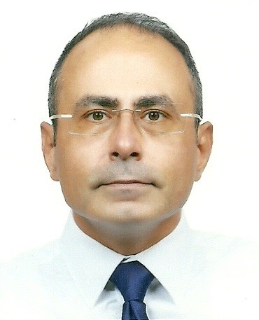

Dr. Ali İbrahim Balın, CPPM
Supply Chain & Procurement Leader | Strategic Sourcing & Supplier Management | SAP S/4HANA, Ariba, AI & Digital Transformation | Manufacturing, Cost Reduction & Process Improvement
Tedarik Zinciri & Satın Alma Lideri | Stratejik Sourcing & Tedarikçi Yönetimi | SAP S/4HANA, Ariba, Yapay Zekâ & Dijital Dönüşüm | Üretim, Maliyet Azaltma & Süreç İyileştirme
AboutHakkında
I have more than 25 years of professional experience across 15+ industries in supply chain, procurement, digital transformation and process excellence. My career developed from a technical background in quality control and technical purchasing into end-to-end supply chain management, strategic sourcing and SAP/ERP-enabled transformation.
I hold a PhD in Business Administration (Beykent University, 2022), with doctoral research on green purchasing practices and environmental and economic performance. My academic work in green purchasing, sustainable supply chains and business ecosystems adds an evidence-based perspective to business decisions.
Selected roles
- Project Manager – Last-Mile Operations & Digital TransformationFreelance · Most recent roleLast-mile process improvement and digitalisation projects for delivery partners of cargo and parcel shipping companies in Germany.
- Digitalisation & Process Development ManagerMonster ComputerWorked with SAP S/4HANA/Fiori and AI-assisted data flows.
- Supply Chain ManagerNokta Mühendislik A.Ş.
- Procurement and Supply Chain ManagerInfinidium Technologies
- Purchasing Manager & Procurement Compliance AuditorUCB
Tedarik zinciri, satın alma, dijital dönüşüm ve süreç mükemmelliği alanlarında 15'ten fazla sektörde 25 yılı aşkın mesleki deneyime sahibim. Kariyerim, kalite kontrol ve teknik satın alma gibi teknik bir kökenden uçtan uca tedarik zinciri yönetimine, stratejik sourcing'e ve SAP/ERP destekli dönüşüme uzandı.
Yeşil satın alma uygulamaları ile çevresel ve ekonomik performans üzerine yaptığım doktora araştırmasıyla İşletme alanında doktora derecesi aldım (Beykent Üniversitesi, 2022). Yeşil satın alma, sürdürülebilir tedarik zinciri ve iş ekosistemleri alanlarındaki akademik çalışmalarım, iş kararlarına kanıta dayalı bir bakış açısı katıyor.
Öne çıkan görevler
- Proje Yöneticisi – Son Kilometre Operasyonları ve Dijital DönüşümSerbest çalışma · En son görevAlmanya'daki kargo ve paket taşıma şirketlerinin teslimat ortakları için son kilometre süreç iyileştirme ve dijitalleşme projeleri.
- Dijitalleşme ve Süreç Geliştirme MüdürüMonster ComputerSAP S/4HANA/Fiori ve yapay zekâ destekli veri akışlarıyla çalıştım.
- Tedarik Zinciri MüdürüNokta Mühendislik A.Ş.
- Satın Alma ve Tedarik Zinciri MüdürüInfinidium Technologies
- Satın Alma Müdürü ve Satın Alma Uyum DenetçisiUCB
Areas of ExpertiseUzmanlık Alanları
Academic PublicationsAkademik Yayınlar
- Balin, A. I., & Balin, B. E. (2025). Revisiting the impacts of green purchasing practices on environmental and economic performances: A case study for the Marmara region of Türkiye. Sustainable Futures, 9, 100464. https://doi.org/10.1016/j.sftr.2025.100464
- Balin, A. I., & Sari, K. (2023). The effect of green purchasing practices on financial performance under the mediating role of environmental performance: Evidence from Türkiye. Sustainability, 15(4), 3617. https://doi.org/10.3390/su15043617
- Fındıklı, M. A., Şengüllendi, M., & Balın, A. İ. (2020). İş Ekosistemleri. Nobel Yayınları. (Book, co-author)(Kitap, ortak yazar)
CertificationsSertifikalar
- CPPM, CPP (American Purchasing Society)
- ISO 14001:2015 Internal Auditor and ISO 19011:2018 Internal Auditor (TÜV SÜD)
- 22 openSAP certificates
- CPPM, CPP (American Purchasing Society)
- ISO 14001:2015 İç Denetçi ve ISO 19011:2018 İç Denetçi (TÜV SÜD)
- 22 openSAP sertifikası